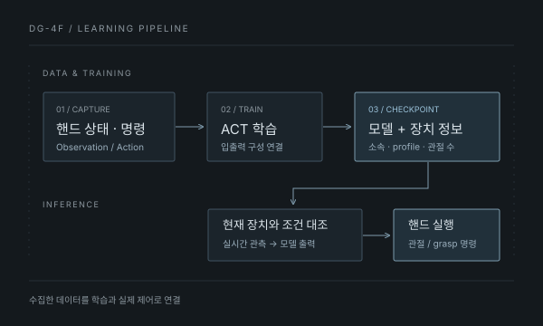
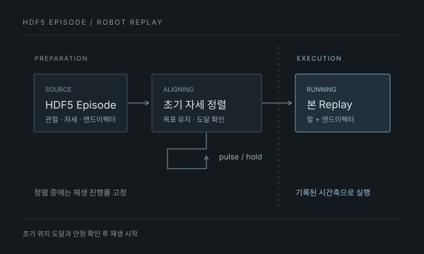
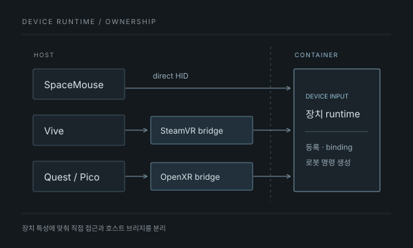

01 ROBOT HAND · IMITATION LEARNING
DG-4F 로봇 핸드
학습 파이프라인
텔레오퍼레이션으로 수집한 핸드 데이터를 ACT 학습과 추론에 연결하고, 학습된 모델로 실제 핸드를 실행했습니다.
대표 문제해결팔 자세 변환 과정에서 손 출력 36차원이 유실된 원인을 추적하고 수정했습니다.
사례 자세히 보기MiMicX에서 확장한 세 가지 기능
뉴로메카 인턴으로 모방학습 플랫폼 MiMicX의 기능을 확장했습니다.
기존 시스템 위에서 데이터와 모델, 장치를 연결하고 실제 장비에서 확인했습니다.

01 ROBOT HAND · IMITATION LEARNING
텔레오퍼레이션으로 수집한 핸드 데이터를 ACT 학습과 추론에 연결하고, 학습된 모델로 실제 핸드를 실행했습니다.
대표 문제해결팔 자세 변환 과정에서 손 출력 36차원이 유실된 원인을 추적하고 수정했습니다.
사례 자세히 보기
02 ROBOT CONTROL · DATA REPLAY
수집한 로봇 조작 데이터를 실제 장비에서 다시 실행하는 기능을 개발했습니다. 초기 정렬과 본 재생을 구분하고 팔과 엔드이펙터의 실행을 연결했습니다.
대표 문제해결정상 Joint Move와 명령 방식을 비교해 초기 정렬 중 목표 전에 멈추던 문제를 해결했습니다.
사례 자세히 보기
03 TELEOPERATION · RUNTIME INTEGRATION
장치별 실행 조건에 맞춰 직접 HID 접근과 호스트 VR 브리지를 연결하고, 플랫폼 입력부터 실제 로봇 동작까지 확인했습니다.
대표 문제해결OpenXR 세션을 호스트가 담당하도록 분리하고 컨테이너가 입력을 전달받는 경로를 구성했습니다.
사례 자세히 보기